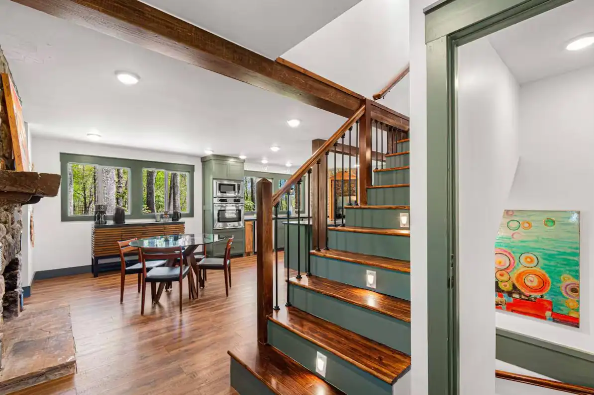

Home › Services › Carpentry & Framing
Carpentry & Framing, Rough-In to Final Trim
One crew that can frame an addition on Monday and run crown molding on Friday. We've done carpentry on some of the highest-end homes in the High Country — and the same care goes into every deck ledger, wall, and window casing we touch.
Structural work you can build on
Framing is where a project succeeds or fails — everything after it hangs on those lines being straight, square, and sized right for mountain snow loads. We frame additions, garages, interior reconfigurations, decks, and specialty structures, and we work clean so the trades behind us (usually also us) start from a good place.


Finish carpentry that shows
Tongue-and-groove ceilings, built-ins, stair work, trim packages, custom bunk rooms — the visible woodwork is where a mountain home gets its character. This is the part of the job we're known for on high-end builds, and it's available for every home, not just the big ones.
- Rough-in framing: additions, garages, interior walls, decks
- Structural repair: sagging floors, rot replacement, beam work
- Tongue-and-groove ceilings and accent walls
- Custom built-ins, bunk rooms, and stair work
- Doors, windows, and full trim packages
Hourly rates keep you in control
Carpentry scope loves to grow — so our hourly rate keeps you in the driver's seat. You see where the time goes, you decide how far the project runs, and you buy materials from a list we give you up front.
Carpentry questions, answered
Do you handle both framing and finish work?
Yes — that's the point. The same crew that frames your addition runs the trim at the end, so nothing gets lost in a handoff between contractors.
Can you fix structural problems, not just build new?
Constantly. Sagging floors, rotted rim joists, undersized beams, settling porches — mountain homes develop all of it, and we repair it properly.
What does carpentry work cost?
We work hourly for exactly this reason: carpentry scope varies house to house. You get a materials list up front, you buy the materials, and you pay for the labor as it happens — full visibility, no padded bid.
Do you build custom features like bunk rooms?
Yes — themed bunk rooms, built-ins, and play spaces are a specialty, especially for vacation rentals. We design and build features like these in our own rental properties.